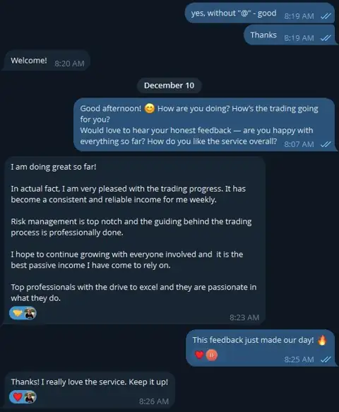
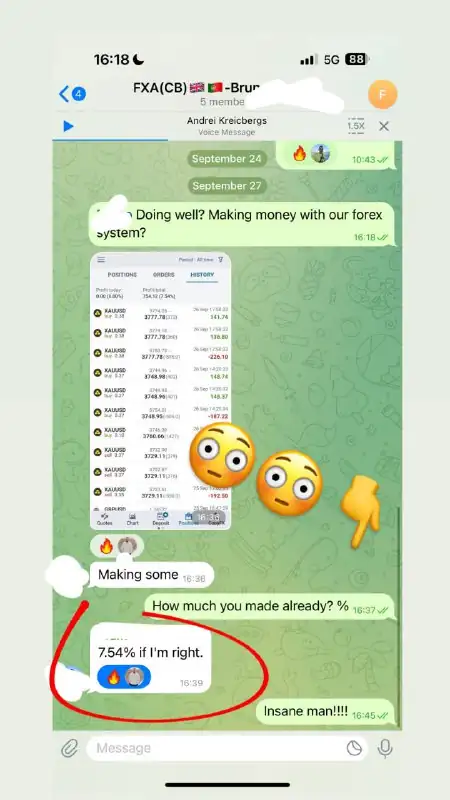
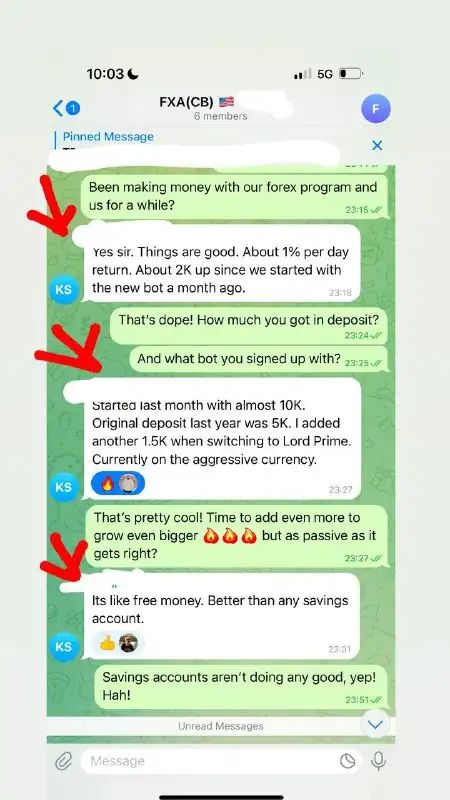
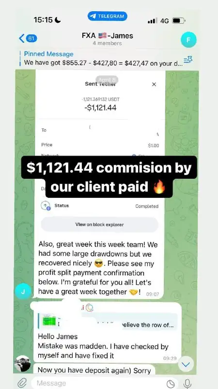
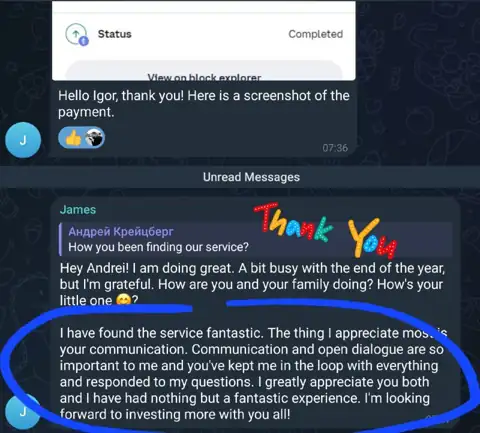
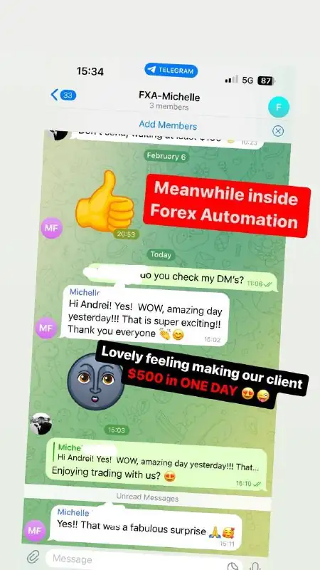
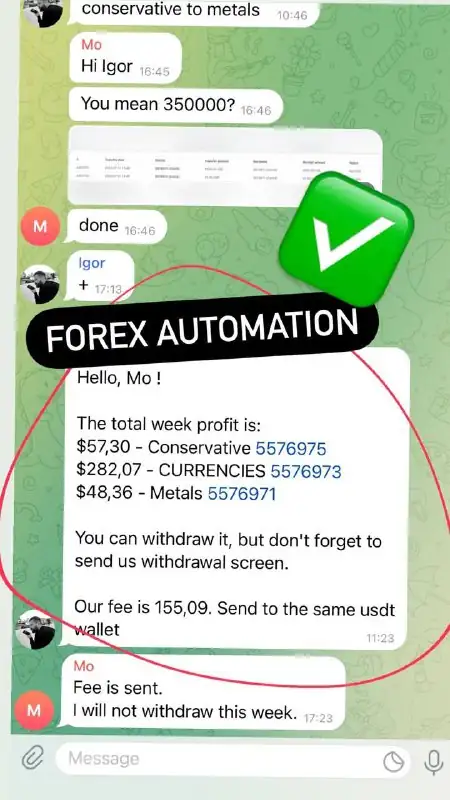
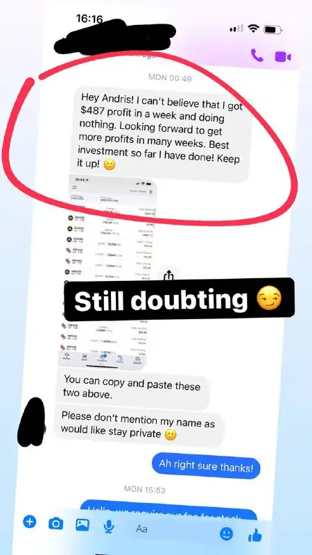

Lo que dicen
nuestros clientes
Capturas sin editar de mensajes y reportes de clientes desde 2022. Toca una imagen para verla completa.

Gracias, todo bien y estamos satisfechos. Pensamos aumentar el depósito. La semana pasada pagamos $124 de comisión, así que nuestras ganancias fueron las mismas; esta semana vamos en ganancia.19.11.2026

Sí, el primer mes estuvo bien: cerca de $120 después del reparto de ganancias sobre una inversión de $1,000, más o menos un 12% neto.18.11.2026

Sí, estoy satisfecho, gracias, hasta traje a un amigo. Empecé hace 1.5 años con un depósito de $15,000 y ahora es casi $50,000: $35,000 de ganancia neta después de su comisión.13.11.2026

Las ganancias llegaron a mi banco esta tarde, y el retiro lo hice apenas ayer. Cuando le preguntaron cuánto ha ganado con el servicio: $15,000.13.11.2026

Otra actualización: 4.76%, está buenísimo, una locura. Ojalá tuviera 10K aquí. Copia manual de operaciones con solo $100; la gente es tonta por no probarlo siquiera.13.11.2026

Un reporte a un cliente con una comisión de $311.67 por el período. El cliente: "Recibido, lo envío y te mando la captura. Transferí $312, ¡gracias!".13.11.2026

Estoy en el programa de automatización de Forex desde septiembre pasado y estoy muy contento con los resultados: constantes, normalmente más del 10% al mes, y sin problemas para retirar cuando quiera.13.11.2026

Qué día, miren mi ganancia total hasta ahora solo en divisas, y 1.26% en un día, increíble como siempre.13.11.2026

Al principio tenía mis dudas, sobre todo con una suma grande, pero me ha funcionado de maravilla: mis $5K me dejan entre $350 y $450 al mes. Tú tienes el control total de tu dinero, nadie más.13.11.2026

Todo bien, sin problemas, siempre contento con cómo funciona. En 2 meses con el bot de divisas voy 1,076 GBP arriba, o sea 21.53% sobre un depósito de 5K.13.11.2026

Gracias, por ahora voy a dejar mis fondos en SmartStrike. Cuando le preguntaron si está ganando dinero con la automatización de Forex: "Sí, estoy ganando".05.11.2026

La cuenta de un cliente en su primer día: +$961.13 (+9.63%) con un depósito de unos $10,000. El cliente: "¡Impresionante! Acabo de entrar a la cuenta, no es una captura".14.07.2026

¡Me encanta! 21.69% en SmartStrike y 4.6% en IronPips. Súper impresionado hasta ahora.25.04.2026

Ya llevo 2 años con ustedes, ¡claro que estoy ganando dinero!25.04.2026

Estoy muy satisfecho con el avance del trading: se volvió para mí un ingreso semanal constante y confiable. La gestión del riesgo es de primera.10.12.2025

Más de $400 de ganancia en 19 días empezando con una inversión de solo $1K, sin mover un dedo. También gané más de $500 con el sistema SmartStrike empezando con una inversión de $2,400.10.12.2025

Estoy muy contento con los resultados y también con el profesionalismo del equipo.10.12.2025

Llevamos casi un mes trabajando juntos y los sistemas propuestos cumplen nuestras expectativas. El equipo conoce bien su trabajo. Esperamos una cooperación a largo plazo.08.12.2025

Sí, voy ganando algo de dinero: ya cerca del 42.76% desde el primer depósito. Estoy pensando en depositar un poco más para ver si las ganancias pueden crecer.18.10.2025

Algo voy ganando: 7.54%, si no me equivoco. La captura muestra el historial de operaciones en oro.30.09.2025

¡Quería agradecer al equipo por los servicios que ofrecen! En unos 30 días de suscripción dio resultados estables de alrededor del 25%.26.09.2025

Llevo un 200% ganado desde junio de 2024. Aunque fue una inversión pequeña, igual saqué mucha ganancia.26.09.2025

Sí, primera semana y está maravilloso: de $1,022 a $1,536 USD, $515 de ganancia. Mi esposo también está abriendo una cuenta y pensamos fondearla más.02.08.2025

¡Hola! Veo que ya hizo un 37.6%. En neto es 18.8%, $189.92 sobre un depósito de $1,000.22.07.2025

¡Hasta ahora todo bien! Estoy pensando en no retirar nada en los próximos meses y dejar que se acumule. Ahora mismo creo que va cerca de un 37% en total.22.07.2025

Sí, los resultados son muy buenos: casi $700 en una cuenta demo en 2 semanas.02.07.2025

Ya está funcionando, ya va +$20. Gracias, me alegra haberlos encontrado.30.04.2025

Todo va bien: cerca de 1% de rendimiento al día, unos $2K arriba desde que empezamos con el nuevo bot hace un mes. Es como dinero gratis, mejor que cualquier cuenta de ahorro.26.02.2025

Entré al programa Forex Automation en enero y gano de forma constante; el equipo siempre está en contacto. Pienso subir mi depósito a $20,000. Todo es muy sencillo, dinero en piloto automático, lo recomiendo.18.01.2025

¡Gran semana, equipo! Tuvimos algunos drawdowns grandes, pero nos recuperamos muy bien. Abajo va la confirmación de mi pago por el reparto de ganancias ($1,121.44). ¡Les estoy muy agradecido a todos!18.01.2025

Retiré $2,500 de la cuenta conservadora. ¡Me encanta este programa! Tengo $35K invertidos y estoy empezando a hacer retiros regulares.15.05.2024

¡Ya llegaron los fondos! Acabo de hacer otro retiro de $9K. Su servicio es excepcional; me ayudaron a mantener el rumbo en tiempos difíciles, gracias.14.05.2024

Tuve un 40% de ganancia del 1 de marzo al 1 de mayo, es una locura. Mandé otros $4.2K, así que ahora tengo $8K adentro.11.05.2024

Ganancia semanal de la cuenta: $301.29. El cliente: "Esta semana estuvo buena, te pago la comisión en cuanto pueda".11.05.2024

Me encanta el trading de Forex. Agregué $1K el 25 de marzo y ya gané $338. Es fantástico, muchas gracias.08.05.2024

Cuando vino el drawdown, se recuperaron muy bien. Voy a meter más dinero.03.04.2024

Empecé el 17 de enero de 2024 con $1,000 y ahora tengo $1,186, casi un 12% de ganancia limpia en 5 semanas.04.03.2024

Empecé el 22 de enero de 2024 y deposité $21,500, después dupliqué el depósito a $43,000. El balance actual es de $48,500, un aumento de $5,500.02.03.2024

El bot de Forex está funcionando bastante bien: empecé con $150 y mi depósito ahora es de $185.22. Es +23% en más o menos un mes y medio; muy satisfecho con el servicio.28.02.2024

¡Muy buen servicio hasta ahora! Quiero volver a depositar lo antes posible. Su servicio debería conocerse en todo el mundo.10.02.2024

¡Genial! Me encanta pagarles, chicos. Aquí va la captura que confirma el pago de la comisión, ¡gracias!31.01.2024

Todo genial, funciona como un reloj y estoy muy satisfecho. Encontré la oportunidad de ganar un 20% al mes sobre mi capital, ¡gracias!27.01.2024

Normalmente soy escéptico, pero entré en diciembre pasado con $200. Hoy mi cuenta tiene $430, más del doble de mi inversión inicial en 1.5 meses.27.01.2024

Quiero recomendar Forex Automation. Empecé con $100 para probar y de verdad funciona: casi +20% en menos de un mes. Voy a seguir usando el servicio.26.01.2024

Empecé con $100 porque tenía mis dudas. En una semana el bot hizo cerca del 10%, así que agregué más. Un mes después mis ganancias son de $581, alrededor del 16%. Una gran forma de generar ingreso pasivo.15.12.2023

En 2 semanas, con unas pocas posiciones que abrí según lo que eligió el bot y con un capital mínimo, logré un 32% de ganancia total. No veo la hora de que llegue enero.14.12.2023

El servicio me pareció fantástico. Lo que más valoro es su comunicación: me mantuvieron al tanto y respondieron mis preguntas. Tengo ganas de invertir más con ustedes.11.12.2023

Hacía tiempo que buscaba un ingreso pasivo y tenía mis dudas. Probé con $100 y no me arrepiento para nada: en 4 meses fui haciendo crecer mi cuenta hasta $6,300. ¡Gracias por esta oportunidad!11.11.2023

¡Su robot agresivo es una bestia, de verdad va con todo!01.11.2023

Buenas tardes, todo bien, y las últimas 2–3 semanas han estado geniales, gracias. Todo excelente, estoy satisfecho.01.11.2023

Sí, un poco más lento de lo que pensaba, pero ¿dónde más consigues un dinero extra así sin hacer nada?16.06.2023

He estado probando el servicio de trading de Forex y tengo ganancias casi desde el primer día. Lo recomiendo: solo necesitas $100 para empezar y la configuración no podría ser más sencilla.16.06.2023

Un cliente, después de cerrar todas las operaciones y retirar los fondos: gracias por el gran trabajo, voy a volver con ustedes.10.02.2023

¡Sí! ¡Wow, qué día increíble ayer! Es emocionantísimo, gracias a todos. Fue una sorpresa fabulosa.10.02.2023

Uso el servicio Forex Automation. Empecé con $5,000, vi que de verdad funciona e invertí más. Ahora tengo $16,000 trabajando; es ingreso pasivo y estoy contento con todo.17.12.2022

Recién empezamos, apenas nuestra primera semana, pero pinta muy bien: $700 en un día. La comunicación también es excelente. La captura de la cuenta muestra +$777.92 (+7.77%).16.10.2022

Uso el servicio desde hace más de cuatro meses: es legítimo, confiable y merece tu confianza. Es ingreso pasivo, tal como lo anuncian.02.09.2022

Lo uso desde hace 4 meses y he ganado $200 por semana en promedio. Es totalmente automático, puedo retirar mi inversión inicial cuando quiera y solo yo controlo los fondos.02.09.2022

Reporte semanal a un cliente: ganancia de $57.30, $282.07 y $48.36 en tres cuentas (conservadora, divisas, metales). El cliente responde que ya envió la comisión.02.09.2022

Al principio pensé que era otra estafa, pero decidí probar. A los 45 días aumenté mi depósito, y lo único que lamento es no haber entrado antes.02.09.2022

Gané $449 esta semana. Soy cliente desde hace tiempo; todo es pasivo y no tengo que tocar nada.02.09.2022

Entré hace un par de días y ya tuve mi primera ganancia. Todo el trading lo hacen por mí, yo no tengo que hacer nada. La captura de la cuenta muestra +$137.72 (+1.37%).02.09.2022

Chat con un cliente: la ganancia total del período fue de $457 y el cliente confirma el reporte.02.09.2022

Llevo más de 5 meses en el programa: yo pongo el depósito y el equipo hace crecer mi cuenta con robots de trading. Gano de forma constante entre $1,000 y $1,800 al mes.02.09.2022
El programa de verdad funciona y no me pide hacer nada. En los últimos 4 días la ganancia total fue de $232 con una inversión de 5000.02.09.2022

Sí, estamos ganando dinero y está buenísimo.02.09.2022

Ya van 2 semanas desde que empecé y la ganancia total del período supera los $300. Ahora gano unos $50 al día como ingreso pasivo, aparte de mi negocio principal.02.09.2022

No puedo creer que gané $487 en una semana sin hacer nada. ¡La mejor inversión que he hecho hasta ahora!02.09.2022
Empieza con una pregunta
Escríbenos por Telegram o WhatsApp: te sugerimos un broker para tu país y un modelo de riesgo que te convenga, configuramos una demo de 14 días y te ayudamos a empezar.
Escríbenos por Telegram